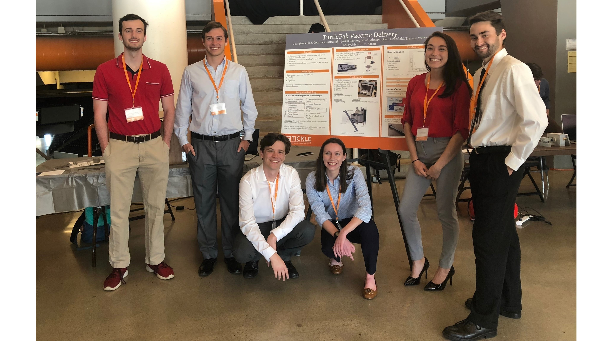

gblue@vols.utk.edu linkedin.com/in/georgianablue1623/
Most Recent Experience


AT&T Technology Development Program - TDP Engineer I
July 2019 - current
Time Warner Network Merger Business & Data Analyst
July 2019 - current
Time Warner Network Merger Business & Data Analyst
- Leveraged AT&T’s internal mapping application to display Time Warner assets alongside AT&T’s global network presence. The intricate mapping of thousands of sites was needed to showcase AT&T’s ability to deliver to the diverse network needs of Time Warner
- Completed an iterative cost analysis to provide a foundational 1Q2020 budget for the Time Warner network migration from external network providers to AT&T, delivering a cost savings of $562,854.04
- Performed a complete data analysis, studying inbound and outbound peering traffic to find an opportunity for expansion of a Service Node Routing Center to a 9th national peering site
Research Assistant at IACMI - The Composites Institute
May 2018 - Aug. 2018
May 2018 - Aug. 2018
- Led research studying the degradation of unique biocomposites to better understand manufacturing’s effect on waste streams and potential applications of biocomposites
- Assisted in background research and calculating the embodied energy of recycled composites
Publications
Calculating the Embodied Energy of Recycled Composites (Oct. 2018)
Komal Kooduvalli, Georgiana Blue, Uday Vaidya, Soydan Ozcan
Honors
CAMX 2018 Outstanding Technical Paper Award Winner – Best in Track: Green & Sustainability
Calculating the Embodied Energy of Recycled Composites (Oct. 2018)
Komal Kooduvalli, Georgiana Blue, Uday Vaidya, Soydan Ozcan
Honors
CAMX 2018 Outstanding Technical Paper Award Winner – Best in Track: Green & Sustainability
University and Home Projects
